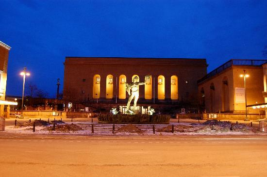
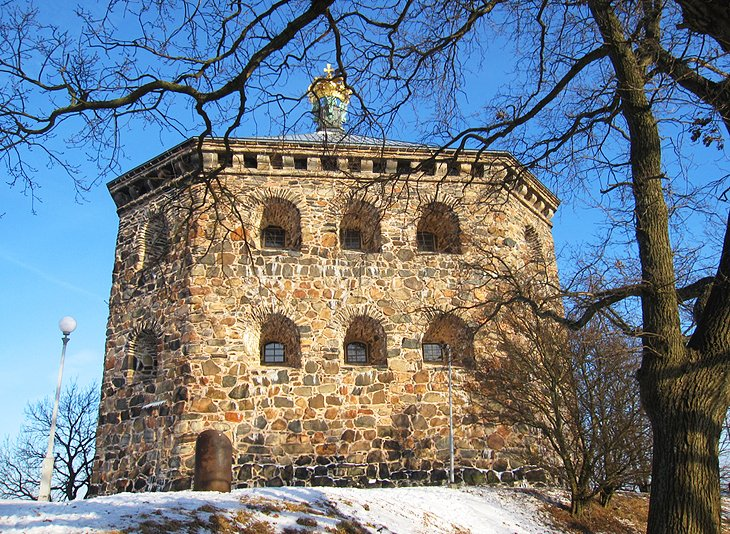

Gothenburg
Gothenburg is the second-largest city in Sweden , fifth-largest in the Nordic countries, and capital of the Vastra Gotaland Country. It is situated by Kattegat, on the west coast of Sweden, and has a population of approximately 570,000 in the city proper and about 1 million inhabitants in the metropolitan
Liseberg Amusement Park

The Liseberg Amusement Park, which opened in 1923 and is still a family favorite, is a Gothenburg institution. This popular attraction — the largest of its kind in Scandinavia — attracts locals and tourists alike with thrilling rides and roller coasters, regular concerts, and a lovely Christmas market. Around 40 different attractions and rides will keep you entertained for hours, including AtmosFear, Europe's tallest free fall experience, and the award-winning wooden roller coaster Balder. The Liseberg Wheel offers spectacular views of the city, while the Helix roller coaster is another popular attraction. During the summer, there's also wonderful cuisine, music, sports, and hundreds of thousands of flowers in bloom.
Gothenburg Museum of Art

The Gothenburg Museum of Art (Goteborgs Konstmuseum) houses one of the finest collections of art in Northern Europe. The collection includes works from the 15th century to the present day, with a focus on Nordic art. Carl Larsson, Edvard Munch, Anders Zorn, Pablo Picasso, Marc Chagall, Claude Monet, Rembrandt, and many others are among the artists featured here. Temporary exhibitions, family activities, lectures, workshops, guided tours, a store, and a café are all available at the museum. The picture exhibitions at the museum's Hasselblad Centre are also worth seeing. The yearly Hasselblad Award Winners Exhibition is a highlight. The City Theatre and Art Deco Concert Hall are right next door.
Skansen Kronan

Skansen Kronan fortress, a short walk from the city's old Haga quarter and up a steep flight of stairs, gives magnificent views of the city as well as a peek of Swedish history. The castle, which was completed in 1697, was intended to guard against the possibility of Danish assaults from the south. Gothenburg, on the other hand, was never assaulted in this manner, and the cannons inside have been inactive for generations. During the nineteenth century, the structure was used as a prison, then as a private residence, and finally as a military museum in the twentieth century. The location now includes a restaurant and a conference center. A summer café serves home-baked cakes, pastries, and ice cream in the ancient army barracks close to the tower.